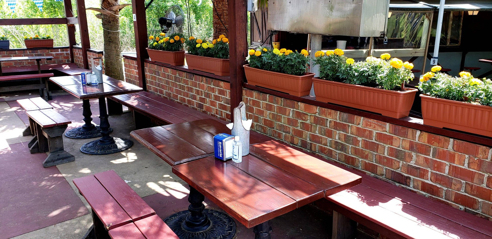

About
Starting out as a labor of love in the kitchen, Hans & Franz Biergarten is our dream come true. We love food ( and beer ), and if you do too, you've come to the right place! Everything is made fresh in-house, like we say Southern Hospitality with a German flair.
We realized that only the German cuisine would limited us and that Juergen and I have traveled the world and worked in many kitchens would be a shame not to share that.
As our food, the whole building and ambiance is unique. William Bates moved from Rhode Island to SC in the year 1819 but it wasn’t until 1833 that he purchased the land along the banks of Rocky Creek that would become the site of his textile mill. After the civil War the Batesville Mill was purchased again by George Putnam formerly of the Camperdown Mills Company.
Putnam run the mill until his death in 1890 At which time it was taken over by his daughter Mary Putnam Gridley who had served as secretary during his tenure. Due to a fire in January 1998 very little remains of the mill. At least two buildings known to have a connection with Batesville Mill still survived today.
One is just across Hwy 14 from the site and was build up from the remains of the mill store that burned in the early 1900’s. It is currently the home of Hans & Franz Biergarten. Today it is one of the oldest buildings left in the Upstate.
After a 2 year renovation and adding one of the nicest outside biergarten including a tropical atmosphere with palm trees and tropical plants it's more than a restaurant, it's a place where you can relax. Its like away from home, but feel at home.
We have several beers from tap, not to many so it is fresh all the time. We have a nice selection in bottle from Europe. Our wine list is small and efficient, so you don’t spend hours studying the wine menu.
Thanks for supporting small business.